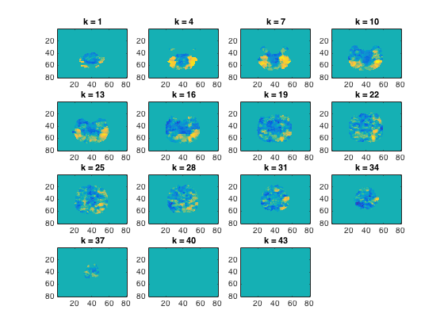
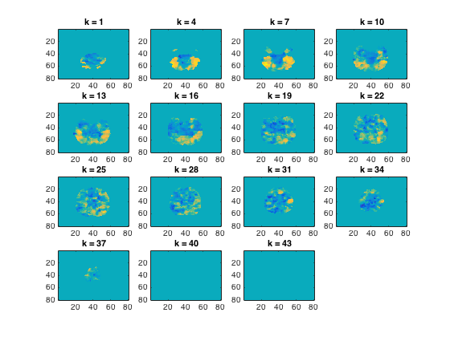

Demo: fMRI searchlights with representational similarity analysis
The data used here is available from http://cosmomvpa.org/datadb.zip
This example uses the following dataset: - 'ak6' is based on the following work (please cite if you use it): Connolly et al (2012), Representation of biological classes in the human brain. Journal of Neuroscience, doi 10.1523/JNEUROSCI.5547-11.2012
Six categories (monkey, lemur, mallard, warbler, ladybug, lunamoth) during ten runs in an fMRI study. Using the General Linear Model response were estimated for each category in each run, resulting in 6*10=60 t-values.
The example shows a searchlight analysis matching local neural similarity patterns to three different target similarity matrices
- For CoSMoMVPA's copyright information and license terms, #
- see the COPYING file distributed with CoSMoMVPA. #
Contents
Set data paths
The function cosmo_config() returns a struct containing paths to tutorial data. (Alternatively the paths can be set manually without using cosmo_config.)
config=cosmo_config(); ak6_study_path=fullfile(config.tutorial_data_path,'ak6'); % show readme information readme_fn=fullfile(ak6_study_path,'README'); cosmo_type(readme_fn); output_path=config.output_data_path; % reset citation list cosmo_check_external('-tic');
# # # ##### ######
# # # # # # # # ## ##### ##
# # # # # # # # # # # #
# # ### ##### ###### # # # # # # #
####### # # # # # # ###### # ######
# # # # # # # # # # # # #
# # # # ##### ###### # # # # #
Overview
--------
fMRI responses to viewing images of six species in the animal kingdom,
used in Connollly et al. 2012.
Contents
--------
- s0[1-8]/ This directory contains fMRI data from 8 of the 12
participants studied in the experiment reported in
Connolly et al. 2012 (Code-named 'AK6' for animal
kingdom, 6-species). Each subject's subdirectory
contains the following data:
- glm_T_stats_perrun.nii A 60-volume file of EPI-data preprocessed using
AFNI up to and including fitting a general linear
model using 3dDeconvolve. Each volume contains the
t-statistics for the estimated response to a one
of the 6 stimulus categories. These estimates were
calculated independently for each of the 10 runs
in the experiment.
- glm_T_stats_even.nii Data derived from glm_T_stats_perrun.nii.
- glm_T_stats_odd.nii Each is a 6-volume file with the T-values averaged
across even and odd runs for each category.
- brain.nii Skull-stripped T1-weighted anatomical brain image.
- brain_mask.nii Whole-brain mask in EPI-space/resolution.
- vt_mask.nii Bilateral ventral temporal cortex mask similar to
that used in Connolly et al. 2012.
- ev_mask.nii Bilateral early visual cortex mask.
- models
- behav_sim.mat Matlab file with behavioural similarity ratings.
- v1_model.mat Matlab file with similarity values based on
low-level visual properties of the stimuli.
Methods
-------
The stimulus-specific volumes in the stats T-stats file are in the order
monkey, lemur, mallard (duck), warbler, ladybug, lunamoth
for each of the ten runs.
Reference
---------
When using this dataset for any publication please cite:
Connolly, A. C. , Guntupalli, J. S. , Gors, J. , Hanke, M. , Halchenko, Y. O.,
Wu, Y. , Abdi, H. and Haxby, J. V. (2012). Representation of biological classes
in the human brain. Journal of Neuroscience, 32, 2608-2618.
[PDF] DOI: 10.1523/JNEUROSCI.5547-11.2012,
Contact
-------
Andrew C. Connolly <andrew.c.connolly |at| dartmouth.edu>
Load data
%%%%%%%%%%%%%%%%%%%%%%%%%%%%%%%%%%%%%%%%%%%%%%%%%%%%%%%%%%%%%%% % This example uses the 'ak6' dataset % In this example only one sample (response estimate) per condition (class) % per feature (voxel) is used. Here this is done using t-stats from odd % runs. One could also use output from a GLM based on an entire % scanning session experiment. % % define data filenames & load data from even and odd runs data_path=fullfile(ak6_study_path,'s01'); % data from subject s01 mask_fn=fullfile(data_path, 'brain_mask.nii'); % whole brain mask data_fn=fullfile(data_path,'glm_T_stats_odd.nii'); ds=cosmo_fmri_dataset(data_fn,'mask',mask_fn,... 'targets',1:6,'chunks',1);
Set animal species & class
ds.sa.labels={'monkey','lemur','mallard','warbler','ladybug','lunamoth'}';
ds.sa.animal_class=[1 1 2 2 3 3]';
% simple sanity check to ensure all attributes are set properly
cosmo_check_dataset(ds);
% print dataset
fprintf('Dataset input:\n');
cosmo_disp(ds);
Dataset input:
.a
.vol
.mat
[ 3 0 0 -122
0 3 0 -114
0 0 3 -11.1
0 0 0 1 ]
.xform
'scanner_anat'
.dim
[ 80 80 43 ]
.fdim
.labels
{ 'i'
'j'
'k' }
.values
{ [ 1 2 3 ... 78 79 80 ]@1x80
[ 1 2 3 ... 78 79 80 ]@1x80
[ 1 2 3 ... 41 42 43 ]@1x43 }
.sa
.targets
[ 1
2
3
4
5
6 ]
.chunks
[ 1
1
1
1
1
1 ]
.labels
{ 'monkey'
'lemur'
'mallard'
'warbler'
'ladybug'
'lunamoth' }
.animal_class
[ 1
1
2
2
3
3 ]
.samples
[ -0.0375 0.267 2.71 ... 0.581 0.564 0.55
0.145 0.457 1.3 ... 0.158 0.685 0.728
-0.269 -0.317 1.59 ... 0.11 0.616 -0.271
-0.698 -0.722 1.21 ... 0.175 -0.0776 1.03
-0.584 -0.183 1.44 ... -0.563 0.146 0.62
-1.32 -0.912 0.782 ... 1.41 1.3 1.15 ]@6x43822
.fa
.i
[ 31 32 36 ... 34 35 34 ]@1x43822
.j
[ 17 17 17 ... 35 35 36 ]@1x43822
.k
[ 1 1 1 ... 39 39 39 ]@1x43822
Define feature neighorhoods
%%%%%%%%%%%%%%%%%%%%%%%%%%%%%%%%%%%%%%%%%%%%%%%%%%%%%%%%%%%%%%% % For the searchlight, define neighborhood for each feature (voxel). nvoxels_per_searchlight=100; % The neighborhood defined here is used three times (one for each target % similarity matrix), so it is not recomputed for every searchlight call. fprintf('Defining neighborhood for each feature\n'); nbrhood=cosmo_spherical_neighborhood(ds,'count',nvoxels_per_searchlight); % print neighborhood fprintf('Searchlight neighborhood definition:\n'); cosmo_disp(nbrhood);
Defining neighborhood for each feature
+00:00:14 [####################] -00:00:00 mean size 99.8
Searchlight neighborhood definition:
.a
.vol
.mat
[ 3 0 0 -122
0 3 0 -114
0 0 3 -11.1
0 0 0 1 ]
.xform
'scanner_anat'
.dim
[ 80 80 43 ]
.fdim
.labels
{ 'i'
'j'
'k' }
.values
{ [ 1 2 3 ... 78 79 80 ]@1x80
[ 1 2 3 ... 78 79 80 ]@1x80
[ 1 2 3 ... 41 42 43 ]@1x43 }
.fa
.nvoxels
[ 98 99 99 ... 100 100 101 ]@1x43822
.radius
[ 4.12 4.12 4 ... 4.24 4.24 4.24 ]@1x43822
.center_ids
[ 1 2 3 ... 4.38e+04 4.38e+04 4.38e+04 ]@1x43822
.i
[ 31 32 36 ... 34 35 34 ]@1x43822
.j
[ 17 17 17 ... 35 35 36 ]@1x43822
.k
[ 1 1 1 ... 39 39 39 ]@1x43822
.neighbors
{ [ 1 506 7 ... 510 11 1.12e+03 ]@1x98
[ 2 1 507 ... 50 3 2.42e+03 ]@1x99
[ 3 511 12 ... 1.1e+03 545 2 ]@1x99
:
[ 4.38e+04 4.38e+04 4.38e+04 ... 4.25e+04 4.25e+04 4.31e+04 ]@1x100
[ 4.38e+04 4.38e+04 4.38e+04 ... 4.25e+04 4.25e+04 4.31e+04 ]@1x100
[ 4.38e+04 4.38e+04 4.38e+04 ... 4.25e+04 4.25e+04 4.31e+04 ]@1x101 }@43822x1
.origin
.a
.vol
.mat
[ 3 0 0 -122
0 3 0 -114
0 0 3 -11.1
0 0 0 1 ]
.xform
'scanner_anat'
.dim
[ 80 80 43 ]
.fdim
.labels
{ 'i'
'j'
'k' }
.values
{ [ 1 2 3 ... 78 79 80 ]@1x80
[ 1 2 3 ... 78 79 80 ]@1x80
[ 1 2 3 ... 41 42 43 ]@1x43 }
.fa
.i
[ 31 32 36 ... 34 35 34 ]@1x43822
.j
[ 17 17 17 ... 35 35 36 ]@1x43822
.k
[ 1 1 1 ... 39 39 39 ]@1x43822
Simple RSM searchlight
nsamples=size(ds.samples,1); target_dsm=zeros(nsamples); % define 'simple' target structure where primates (monkey, lemur), % birds (mallard, warbler) and insects (ladybug, lunamoth) are the same % (distance=0), all other pairs are equally dissimilar (distance=1). % Given the ds.sa.targets assignment, pairs (1,2), (3,4) and (5,6) have % distance 0, all others distance 1. animal_class=ds.sa.animal_class; for row=1:nsamples for col=1:nsamples same_animal_class=animal_class(row)==animal_class(col); if same_animal_class target_dsm(row,col)=0; else target_dsm(row,col)=1; end end end fprintf('Using the following target dsm\n'); disp(target_dsm); imagesc(target_dsm) set(gca,'XTick',1:nsamples,'XTickLabel',ds.sa.labels,... 'YTick',1:nsamples,'YTickLabel',ds.sa.labels) % set measure measure=@cosmo_target_dsm_corr_measure; measure_args=struct(); measure_args.target_dsm=target_dsm; % print measure and arguments fprintf('Searchlight measure:\n'); cosmo_disp(measure); fprintf('Searchlight measure arguments:\n'); cosmo_disp(measure_args); % run searchlight ds_rsm_binary=cosmo_searchlight(ds,nbrhood,measure,measure_args); % Note: when these results are used for group analysis across multiple % participants, it may be good to Fisher-transform the correlation values, % so that they are more normally distributed. This can be done by: % % ds_rsm_binary.samples=atanh(ds_rsm_binary.samples); % show results cosmo_plot_slices(ds_rsm_binary); % store results output_fn=fullfile(output_path,'rsm_binary.nii'); cosmo_map2fmri(ds_rsm_binary,output_fn);
Using the following target dsm
0 0 1 1 1 1
0 0 1 1 1 1
1 1 0 0 1 1
1 1 0 0 1 1
1 1 1 1 0 0
1 1 1 1 0 0
Searchlight measure:
@cosmo_t ... measure
Searchlight measure arguments:
.target_dsm
[ 0 0 1 1 1 1
0 0 1 1 1 1
1 1 0 0 1 1
1 1 0 0 1 1
1 1 1 1 0 0
1 1 1 1 0 0 ]
+00:01:06 [####################] -00:00:00
Using another RSM
% This example is very similar to the previous example. % - This example uses a different target representational similarity % matrix. The code below allows for identifying regions that show a % linear dissimilarity across animal class, with primates of distance 1 % from birdsand distance 2 from insects, and insects distance 1 from % birds. Graphically: % % +------------------+------------------+ % primates birds insects % {monkey,lemur} {mallard,warbler} {ladybug,lunamoth} % % - It uses a Spearman rather than Pearson correlation measure to match % the neural similarity to the target similarity measure animal_class=ds.sa.animal_class; % compute absolute difference between each pair of samples target_dsm=abs(bsxfun(@minus,animal_class,animal_class')); fprintf('Using the following target dsm\n'); disp(target_dsm); imagesc(target_dsm) set(gca,'XTick',1:nsamples,'XTickLabel',ds.sa.labels,... 'YTick',1:nsamples,'YTickLabel',ds.sa.labels) % set measure measure=@cosmo_target_dsm_corr_measure; measure_args=struct(); measure_args.target_dsm=target_dsm; % 'Spearman' requires matlab with stats toolbox; if not present use % 'Pearson' if cosmo_check_external('@stats',false) measure_args.type='Spearman'; else measure_args.type='Pearson'; fprintf('Matlab stats toolbox not present, using %s correlation\n',... measure_args.type) end % run searchlight ds_rsm_linear=cosmo_searchlight(ds,nbrhood,measure,measure_args); % Note: when these results are used for group analysis across multiple % participants, it may be good to Fisher-transform the correlation values, % so that they are more normally distributed. This can be done by: % % ds_rsm_linear.samples=atanh(ds_rsm_linear.samples); % show results cosmo_plot_slices(ds_rsm_linear); % store results output_fn=fullfile(output_path,'rsm_linear.nii'); cosmo_map2fmri(ds_rsm_linear,output_fn);
Using the following target dsm
0 0 1 1 2 2
0 0 1 1 2 2
1 1 0 0 1 1
1 1 0 0 1 1
2 2 1 1 0 0
2 2 1 1 0 0
+00:01:45 [####################] -00:00:00
 Using a behavioural RSM
This example is very similar to the one above, but now the target similarity structure is based on behavioural similarity ratings
% load behavioural similarity matrix from disc behav_model_fn=fullfile(ak6_study_path,'models','behav_sim.mat'); behav_model=importdata(behav_model_fn); target_dsm=behav_model; fprintf('Using the following target dsm\n'); disp(target_dsm); imagesc(target_dsm) set(gca,'XTick',1:nsamples,'XTickLabel',ds.sa.labels,... 'YTick',1:nsamples,'YTickLabel',ds.sa.labels) % set measure measure=@cosmo_target_dsm_corr_measure; measure_args=struct(); measure_args.target_dsm=target_dsm; % run searchlight ds_rsm_behav=cosmo_searchlight(ds,nbrhood,measure,measure_args); % Note: when these results are used for group analysis across multiple % participants, it may be good to Fisher-transform the correlation values, % so that they are more normally distributed. This can be done by: % % ds_rsm_behav.samples=atanh(ds_rsm_behav.samples); % show results cosmo_plot_slices(ds_rsm_behav); % store results output_fn=fullfile(output_path,'rsm_behav.nii'); cosmo_map2fmri(ds_rsm_behav,output_fn); % Show citation information cosmo_check_external('-cite');
Using the following target dsm
0 0.1015 1.0520 1.0976 1.6778 1.7459
0.1015 0 1.0420 1.0512 1.7010 1.7570
1.0520 1.0420 0 0.3924 1.5359 1.4550
1.0976 1.0512 0.3924 0 1.4730 1.3987
1.6778 1.7010 1.5359 1.4730 0 0.1603
1.7459 1.7570 1.4550 1.3987 0.1603 0
+00:01:03 [####################] -00:00:00
If you use CoSMoMVPA and/or some other toolboxes for a publication, please cite:
J. Shen. NIFTI toolbox. available online from http://www.mathworks.com/matlabcentral/fileexchange/8797-tools-for-nifti-and-analyze-image
N. N. Oosterhof, A. C. Connolly, J. V. Haxby (2016). CoSMoMVPA: multi-modal multivariate pattern analysis of neuroimaging data in Matlab / GNU Octave. Frontiers in Neuroinformatics, doi:10.3389/fninf.2016.00027.. CoSMoMVPA toolbox available online from http://cosmomvpa.org
The Mathworks, Natick, MA, United States. Matlab 8.5.0.197613 (R2015a) (February 12, 2015). available online from http://www.mathworks.com
